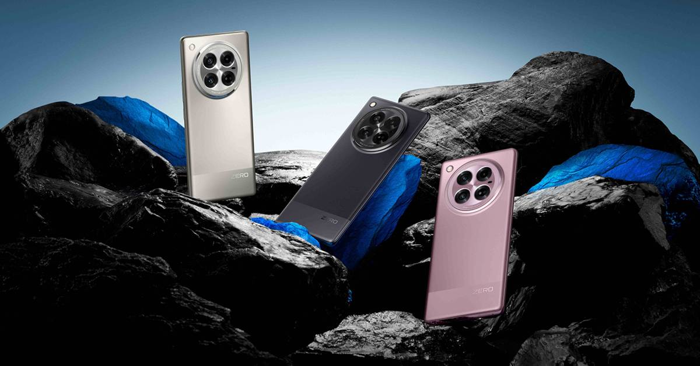

21 Noveember 2024
Infinix Zero 40 Akan Segera Rilis di Indonesia
Infinix Zero 40 Series resmi diluncurkan untuk pasar Malaysia. Smartphone itu hadir dalam versi 4G dan 5G, dengan mengusung desain yang premium menggunakan layar curved AMOLED, kamera utama 108MP, serta integrasi khusus dengan GoPro.
Integrasi dengan GoPro memungkinkan Infinix Zero 40 Series bisa dipakai sebagai viewfinder untuk kamera GoPro langsung melalui aplikasi kamera bawaan Infinix. Sebagai tambahan, aplikasi GoPro Quick juga terinstal secara bawaan pada smartphone tersebut.
Sama dengan generasi sebelumnya, Infinix Zero 40 Series tetap hadir dengan tampilan yang premium berkat layar curved-nya. Namun, desain keseluruhan cukup berbeda dari Infinix Zero 30 Series dengan kini punya bump kamera berbentuk bulat.